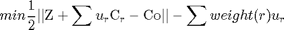
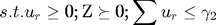

Contents
function W=dualOpt2(Co,constraint,weight,config)
This function optimizes the dual problem of the SDP (2nd variant)
- Co is pair-wise term;
- constraint is a 3D matrix, where each slice (:,:,i) is a constraint;
- weight is a vector;
- The config contains the parameters and options;
- The output W is projection mapping.
We optimize the following dual problem


persistent u; persistent Z; sz=size(constraint); num=length(weight); if num==1 u=zeros(num,1); Z=zeros(sz(1),sz(2)); else u=[u;0]; end Cr=reshape(constraint,sz(1)*sz(2),num); A=ones(1,num); lb=zeros(num,1); H=Cr'*Cr; b=config.param.gamma; if ~isfield(config,'numInnerIter') config.numInnerIter=2; end opts = optimoptions('quadprog','Algorithm','interior-point-convex','Display','off','MaxIter',config.numQPIter); for iter=1:config.numInnerIter %x=quadprog(H,f,A,b,Aeq,beq,lb,ub,x0,options); % 1/2*x'*H*x + f'*x. f=-weight+Cr'*Z(:); if config.verbose>=1 tic; end u=quadprog(H,f,A,b,[],[],lb,[],u,opts); if config.verbose>=1 timeQP=toc; fprintf('The time for quadprog is : %f\n', timeQP); end if config.verbose>=1 tic; end [Z,W]=getOptimalZW(constraint,u); if config.verbose>=1 timeEig=toc; fprintf('The time for eigvalue decomposition is : %f\n', timeEig); end end
Error using dualOpt2 (line 16) Not enough input arguments.
end